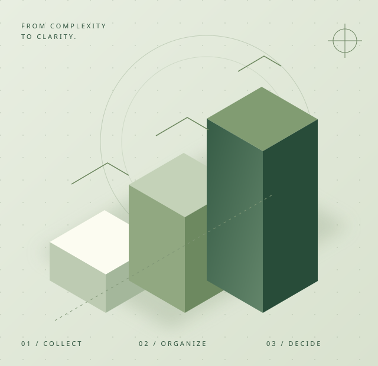

ONGYEOLSOOP · TAX & ACCOUNTING
숫자가 정리되면,
다음이 보입니다.
사업의 시작과 성장 사이.
복잡한 세무를 이해할 수 있는 말로 풀어
당신의 다음 결정을 함께 준비합니다.
01 / CLARITY차근차근, 더 선명한 내일로

복잡함을 덜고, 중요한 것에 집중합니다.
01 · 쉽게 이해하는 설명복잡한 항목도 하나씩 짚어봅니다.
02 · 사업에 맞춘 흐름단계와 상황에 맞춰 살펴봅니다.
03 · 미리 준비하는 습관일정과 준비 항목을 함께 정리합니다.
01FOUNDATION
사업의 첫걸음
사업 형태와 기본 준비 항목을 정리하는 시작 단계 안내입니다.
개업 안내 ↗02ROUTINE
매월의 기록
자료 정리부터 신고 일정까지, 반복되는 업무의 흐름을 소개합니다.
기장 안내 ↗03NEXT STEP
다음을 위한 점검
사업의 변화 시점에 확인할 기록과 질문을 함께 살펴봅니다.
점검 안내 ↗START A CONVERSATION
좋은 정리는,
작은 질문에서 시작됩니다.
문의 화면에서 상담 요청 과정을 체험해 보세요.